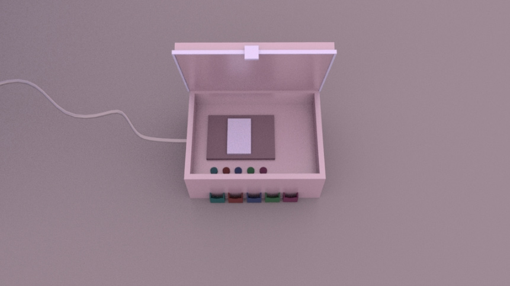

Product Design, 3D Modeling & VR
3D models and renders designed by me on Maya 3D. Fantasy objects, digital food and imagined spaces and places.
Digital Chef of Indulgences
After living in Paris for a semester in Fall 2017, I realized I have an enormous passion for food and the culinary industry. Right after I came back, I wanted to start taking cooking classes right away but it didn't seem possible. So I decided to start designing food in 3D as a way to start pursuing my culinary career. Therefore, I became a Digital Chef. I explored the possibilities of designing food digitally by using techniques and colors beyond what would be expected. Voilà!
●
The Flavor Maker

I created The Flavor Maker as an exercise for a Physical Computing class. The exercise prompt was the following: "Ideate a machine, device or concept that has not been done before or is impossible to create." The idea of The Flavor Maker comes from my desire to be able to taste again many delicious foods that I ate at restaurants and patisseries, and be able to share those flavors!
Here is my final creation, 3D modeled in Maya 3D. This device inputs food or drink and codifies its taste and flavor in order to be able to recreate it. The code is converted into parameters of sweet, salty, sour, spicy and bitter. Ideally, it would be able to recreate the exact flavor and output it in a Flavor Strip. The output would be in the form of a strip with edible aromas, scents and sprays that contain few calories but have immense amounts of flavor. The machine itself can also send the codified flavor to other users in order for them to be able to taste this. This would be the taste version of a 3D printer, maybe we are not too far from it being a reality?
●
Dream Forest
This dream forest was created straight from the inner workings of my brain. I constantly imagine utopian worlds of color and happiness, where neon pinks, donuts and trippy representations of nature live as one. I began to create this world in Maya 3D by experimenting with simple shapes that can form complex figures such as the tropical trees made out of spheres. I was definitely inspired by Costa Rican motifs of tropical nature, as well as by my love for Candyland as an imagined world. In the video above, I embedded my created world in the VR platform, Unity, and was able to further explore my world through the first person POV perspective.
Process
I was inspired by images and experiences created by different artists and concepts. Erik Parker's VR experience, Yayoi Kusama's art installation, and the Candyland concept, were the main visuals I used to start making my idea more concrete.
I began the project in Maya 3D by modeling trees in different sizes and colors with very simple spheres and cylinders.
I decided to create a map to illustrate what my story in this world was about, or at least one of the million stories that could happen. I created a character, Mr. Fry, who is out there in the world looking for her Fry Girl. A very hopeless romantic type of thing.
I added a slide and several more trees. Then, I decided to make the background more contextualizing as a way to finalize the Maya part of the project. The second and third images show that result. After than, I plugged it into Unity.
Unity was a whole new experience for me because the color scheme I had initially chosen was completely destroyed. I have to be very organized with my files in order to recolor everything in Unity, in the way my mind intended it to be.
In these final images, I show the final result of how my world turned out. Colorful, dreamy, endless, and fun. Take another look at the video for a more deepened first person point of view perspective. Enjoy my the forest of my dreams!
●